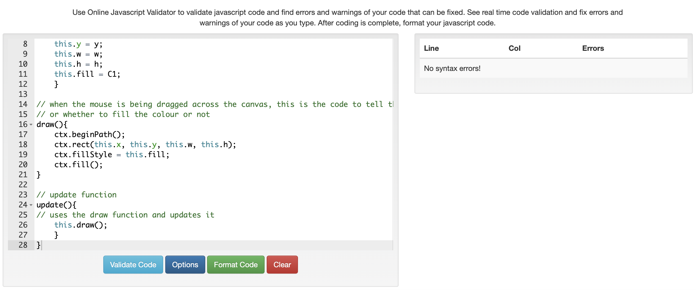
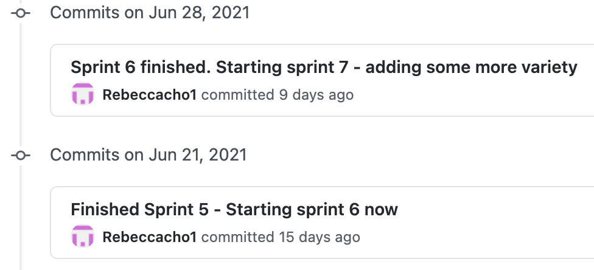
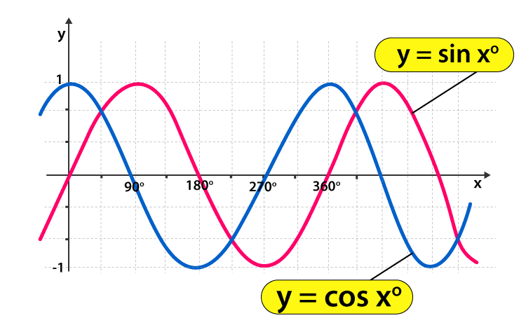

Quick Information about my program
What is this program about?
This computer program that I have programmed is a Website Canvas, which uses Javascript and html code to create a working and interactive canvas.
This canvas allows the user to choose different shapes such as a line, rectangle, ellipse, different numbered of pentagon sides (meaning the user
could have a 5 sided pentagon) and different numbered of star points (this means, a user can click a star with 7 points or 5 points).
There are 3 types of brush sizes that a user can choose from. For the finishing touches, I have created a fun animated ellipse which
stretches horizontally and vertically.
I have also allowed the user to change colours of their shapes as they create more shapes on the canvas. The colours are picked from the
colour palette. I have also selected a default colour when the user first uses the canvas.
There is also an undo and clear button for the user incase anything goes wrong.
Sprint One
Aim:
The aim for this first sprint, is to be able to create a basic program which the mouse can drag across the screen to make a rectangle anywhere.
Plan
Sprint (Kanban) Board:
Screenshot shown on the far right
Sprint Planning:
Screenshot shown on the far right
Build
Creating and Testing Program
In Sprint One, I have decided to create a simple sprint by allowing the mouse to click and drag to create a basic rectangle. At the moment, it works anywhere on the canvas. I first started with a basic rectangle which only prints on the screen. The second step was to get the mouse down, move and up to be working. I got this to work by using "console.log". The third step was to use the console.log to check whether the click and drag were recorded each time. This meant I had to check if each rectangle being printed on the canvas was being entered into the list. The last step was the get the rectangle to appear when the drag and drop happens.
Reflection
Errors and Reflection:
When I was creating Sprint One, there were not many major or minor errors. The process was created from what I had learnt in the educational videos
I watched in class. I thought about what is the most basic thing I can do for the first sprint? (The Simplicity). What is the minimum product I can show?
I was able to work the click and drag mouse, after a series of help from the teacher. I have attached a video of what this sprint can do.
A problem that occurs in this sprint was when the mouse goes out of the canvas, the rectangle does not get created.
Future Steps:
I’m just taking little steps at a time. Since javascript is still a new language. My next steps are to be able to draw shapes within a boundary - maybe creating a canvas within a canvas.
Link to the canvas page:
Link to Sprint One's Canvas' PageScreenshot of Sprint One's Kanban Board
Screenshot of Sprint One's Planning Board
Git Commit for Sprint One
Checked Sprint One's code through the code checker
Testing for Sprint One
Sprint Two
Aim:
The aim of Sprint Two is to create a certain
spot on the canvas, which allows the user to drag down in
the drawing area. The red drag box is defined by the
Mouse Start and where the mouse ends up going. The program
allows the user to create rectangles on the defined drawing area.
Plan
Sprint (Kanban) Board:
Screenshot shown on the far right
Sprint Planning:
Screenshot shown on the far right
Build
Creating and Testing Program
In Sprint Two, I have created a drawing rectangle canvas with a boundary around it,
so the user can only draw shapes within the boundary.
The drawing rectangle canvas is an already printed rectangle which acts as a canvas
board for the user to draw on. I did not blend the drawing rectangle canvas with the
outer canvas, so the user would know where to draw.
This is shown in my testing video (attached at the bottom of sprint two). In the
first fifteen seconds (0:00 seconds to 0:15 seconds), I checked if the boundary
is happening in the green rectangle. To check this: I had used console log. You
can see, that I click on the canvas and the drawing rectangle canvas corners.
When I click on the canvas corner - it shows it was false, while when I clicked
in the drawing rectangle canvas corners - it shows it was true. Again, this shows
the boundary is working. If the user clicks and drags within the ‘true’ boundary,
the rectangle would appear. This would not work if the user clicks and drags
within the ‘false’ (outside of the drawing rectangle canvas) boundary, so
therefore the rectangle would not appear.
In the testing video, I’ve shown the boundary works by clicking and dragging
at 0:19 seconds to 0:30 seconds.
Reflection
Errors:
There’s one main error in this sprint, the user can draw a rectangle by click
and dragging the mouse from the ‘true’ boundary (in the boundary) to the
‘false’ boundary (outside of the boundary). In the testing video, I have
shown where this error occurs at about 0:21 seconds to 0:22 seconds.
This error occurs because when the mouse is being pressed down within the
'true' boundary, the program notes down that it can draw a rectangle
here. As the mouse is still pressing (clicks down on the mouse pad) and
drags to when the boundary is 'false' and then releases (when the
user's finger is no longer clicking down on the mouse pad) the mouse,
it would create a rectangle because the program thinks that it is still
within the true boundary even though it's false. The program doesn't
known it's in the false boundary until the mouse is unclicked.
Reflection:
I think sprint two went successfully well. I’m still getting the hang of javascript, it is an adjustment from python to javascript as I assumed it would be the same or at least closely the same. The error I have mentioned above may or might not be solved until I have reached sprint 6 or 7. This is because it’s not the most important thing on my list. I just needed the basics to be working before I move on to minor details.
Future Steps:
In the next sprint, I am thinking of allowing the user to have another shape choices other than a rectangle for the user to draw on the rectangle drawing canvas. For this to be able to work, a button would need to be involved.
Link to the canvas page:
Link to Sprint Two's Canvas' PageScreenshot of Sprint Two's Kanban Board
Screenshot of Sprint Two's Planning Board
Git Commit for Sprint Two

Checked Sprint Two's code through the code checker
Testing for Sprint Two
Sprint Three
Aim:
The aim for Sprint Three is to allow the user to click from the
choices of two buttons, which allows them to select a particular shape and
also being able to draw them on the drawing rectangle.
Plan
Sprint (Kanban) Board:
Screenshot shown on the far right
Sprint Planning:
Screenshot shown on the far right
Build
Creating and Testing Program
What’s special about this sprint are the buttons on the canvas.
This allows the user to have different shape choices.
Before the class was given the internal, we were taught the basics.
This includes coding a button. Since I had done the buttons task, I was
able to use it in this internal and adapt it to the internal we are given.
In this case it was naming the buttons to the shape name and giving them
a purpose. The purpose for the buttons is to allow the user to draw the
shape of the button’s name. For example: if the button’s name is called ‘ellipse’
and the user clicks on it. The user should be able to draw an ellipse on the drawing
rectangle canvas.
Once the button is created, the next step is to give the button the purpose (as I
have mentioned above). To be able to give the user choices of different shapes, I
had to research how I could create an ellipse. I decided to choose an ellipse because
it gives the user more choices with their drawing as it allows the user to draw an oval
and a circle.
Reflection
Errors
There are no new errors in this sprint as shown on my testing video. The same error which I had on sprint two still occurs, as I haven’t resolved it yet.
Reflection:
I personally think sprint three went well. It was rather confusing but it was manageable. There were a lot of thinking involved for the drawing ellipse shape as we weren’t given the formula of how to create one. My friends and I had to research how an ellipse could be created using javascript. This was one of the many difficult tasks as a lot of coders from the internet said different things. I have also placed all my code through the javascript code checker - incase if i had missed a semi-colon.
Future Steps:
In sprint four, I am possibly thinking of adding a colour palette to add some colour variety for the user to use. I am also thinking of changing the colour of the canvas, drawing rectangle canvas and buttons to look more aesthetically pleasing.
Link to the canvas page:
Link to Sprint Three's Canvas' PageScreenshot of Sprint Three's Kanban Board
Screenshot of Sprint Three's Planning Board
Git Commit for Sprint Three
Checked Sprint Three's code through the code checker
Testing for Sprint Three
Sprint Four
Aim:
The aim for sprint four is to create a colour grid (colour palette), which allows
the user to pick what colour they want to change as they draw their shapes on the drawing rectangle canvas.
Plan
Sprint (Kanban) Board:
Screenshot shown on the far right
Sprint Planning:
Screenshot shown on the far right
Build
Creating and Testing Program
Colour Palette:
For sprint four, I have created a colour palette before the actual internal started. I made a colour
palette which wasn’t interactive but it was pasted on the side of the canvas. There were a lot of similarities
between the colour palette and a button so I have decided to draw a Venn diagram which shows the differences
and similarities between the two. To be able to make an interactive colour palette, I had used the boundaries
and the background colour from the buttons. Since the palette didn’t need any texts, I decided not to put any.
The most important difference between a button and the colour palette were the looping that was needed. A
loop was essential for this sprint because it would be easier than coding for one colour block than multiple.
Iterative Decisions
Sprint Design Decisions: On the far right of the screen, there is a picture written as ‘Screenshot of Sprint Four’s Planning Board (Part 2)’. There were two options which I could do with sprint three and four. The first option was to put the colour palette with the buttons in sprint three as they were very similar to each other. Or the second option was to have the buttons and colour palette in their own sprints. I decided to follow through with the second option because it would be easier for me to understand what is going on and also it won’t be a huge git push at the end of sprint three.Reflection
Errors
While making this sprint, there were a lot of trail and errors involved. I didn't manage to screen record or capture any of the errors I made. I knew I should have done this but I thought it wasn't important as it was part of the process of creating a colour palette. most of my errors occured in my classmates as well, so I thought it wasn't important to document it.
Reflection:
I think this sprint is slightly more advanced than the last sprint, as there were some concepts from buttons that were used for the colour palette. The advanced concepts that I struggled with the most were the loop function which produced more than one colour square.
Future Steps:
For my next sprint (sprint 5), I am considering improving on my canvas by creating more shape buttons for the user to choose from and possibly maybe add a undo and clear button.
Link to the canvas page:
Link to Sprint Four's Canvas' PageScreenshot of Sprint Four's Kanban Board
Screenshot of Sprint Four's Planning Board (part 1)
Screenshot of Sprint Four's Planning Board (part 2)
Git Commit for Sprint Four
Checked Sprint Four's code through the code checker
Testing for Sprint Four
Sprint Five
Aim:
The aim of Sprint 5 is to add more buttons for the user to choose from. I am thinking of adding shapes such as a star,
hexagon and a line. If this sprint is about adding more shape buttons, it wouldn’t be different from sprint three. So I have
decided to add an undo and clear button, since I think it is extremely important for all programs to have.
Plan
Sprint (Kanban) Board:
Screenshot shown on the far right
Sprint Planning:
Screenshot shown on the far right
Build
Creating and Testing Program
In sprint five, I have researched how a star, hexagon and a line was drawn. Once I knew how to draw them, it is important to
test if they work. The next step is to put the shapes and buttons together. This allows the user to draw the shapes by
clicking and dragging on the canvas. There were a couple of errors which popped up during this. I will attach the videos
and explain later on about those errors.
I have also decided in this sprint to create an undo & clear button. This is important because all basic programs will an
undo and clear button for it to be called a decent program. I have also decided to improve on the boundary in the drawing
rectangle canvas, so I coded a small code which would cut the shape off, if the user drags their mouse from within the
canvas and off it.
5.5 on the planning board is a small idea that would be useful for me to improve on. I decided to choose colours for
the colour palette that weren’t the basic rainbow colours. I was trying to keep it original by creating pastel/
soft colours.
Reflection
Errors
There were one major error that I have discovered and documented as I was creating this sprint.
The error I had found has been screen recorded, this is named "Screen capture of error 1" below the screenshot of the code checker
on the far right side of the page. This error was caused by the yMouse and xMouse.
The star is made from two circles. There is one circle in the middle of the star (using the
horizontal drag), where the inner points meet (every second point). While, the larger circle (using
the vertical drag) is where the outer points of the star meet. This therefore creates a star.
In the error video, from the first 0:05 seconds, the user draws a star by dragging the mouse and a red rectangle
guide line shows up. You can see the horizontal drag (xMouse) is being dragged more than the vertical
drag (yMouse). The vertical drag creates the length of the sides while, the horizontal drag creates
the radius of the circle from the centre.
To troubleshoot this error, I had to research on w3schools to see how to fix this error. I came up with
this solution, where I used the smallest maths value either from the xMouse or the yMouse value. I also
had to make sure that no negative values appear so I decided to put an absolute function on those x and
y functions.
var R = Math.min(Math.abs(this.w),Math.abs(this.h))/2;
var R_small = R/2;
Reflection:
This sprint was one of my biggest sprints I have done so far. After doing this sprint, it has brought up many other errors which I have mentioned above. Overall, I’m glad I have done this sprint rather than dragging the number of sprints longer.
Future Steps:
For my next sprint, I am planning to do a free drawing option for the user to choose from. This allows the user to freely draw on the canvas. I am also thinking of doing a clean up as my canvas looks a little bit messy.
Link to the canvas page:
Link to Sprint Five's Canvas' PageScreenshot of Sprint Five's Kanban Board
Screenshot of Sprint Five's Planning Board
Git Commit for Sprint Five
Checked Sprint Five's code through the code checker
Screen capture of error 1
Testing for Sprint Five
Sprint Six
Aim:
The aim of sprint six is being able to create a free drawing brush for the user to use. I have also
mentioned in Sprint 5’s future steps, that there will be a clean up as I think the canvas looks rather messy.
Plan
Sprint (Kanban) Board:
Screenshot shown on the far right
Sprint Planning:
Screenshot shown on the far right
Build
Creating and Testing Program
As you have read from my aim, sprint six is mostly about the free drawing brush. I had to get several
help from the teacher as I thought I needed to make a new drawing brush class. Instead, I only needed
to use the already made ellipse class with the button.
A free drawing brush is created when the mouse is clicked down and moving. The circle is then being
pasted as the mouse is moving. I have decided to put a free drawing brush for the user to choose
because it gives them freedom to do what they want to draw.
Limitations
As the brush is being created, I found a limitation. When the user uses the brush function to draw, it works perfectly while, if the brush is being moved too quickly. Spots of circles would appear, this is because the frame rate for the page is at its max. The frame rate of my drawing page is at 40 frames per a second.
Reflection
Errors
In sprint six, there is one main error that is shown in the testing video. From 0:04 seconds to 0:07 seconds,
when the user had drawn a line, the default colour did not show up on the line but it did for the brush function.
I am planning to use this error and improve on this for the next sprint.
Reflection:
I personally think sprint six went well. Creating the free drawing brush surprised me, I thought it would be difficult to create but instead I had used the ellipse class to create a brush.
Future Steps:
In Sprint seven, the aim is to improve on the free drawing brush, hexagon and star shape. I am thinking of improving the sprint by adding more buttons with the different sized brushes and possibility adding different types of pentagon & stars.
Link to the canvas page:
Link to Sprint Six's Canvas' PageScreenshot of Sprint Six's Kanban Board
Screenshot of Sprint Six's Planning Board

Git Commit for Sprint Six
Checked Sprint Six's code through the code checker
Testing for Sprint Six
Sprint Seven
Aim:
In Sprint Seven, the aim is to create a free drawing brush that has three different brush sizes,
creating buttons with different number of sided pentagon and also buttons with different number of points in a star.
Plan
Sprint (Kanban) Board:
Screenshot shown on the far right
Sprint Planning:
Screenshot shown on the far right
Build
Creating and Testing Program
In sprint 7, I wanted to improve on the different variety of shapes for the user to choose from. I decided to go simple
and use the pre-made shapes that I created to make other shapes from the same family. For example, originally
I had created a hexagon but in this sprint, I decided to change the hexagon to a various different types of
pentagons like: triangles, pentagon and a hexagon.
For a star, there were different number of points for each button. There were a 4 pointed star up to a 7 pointed star.
I have also decided to create three different sized brush circles for the user to choose from. This was pretty
difficult as I had to use the ellipse and the button code for it to happen.
Iterative Decisions:
When I made a circle button, there were a couple of different ways of making this. The first option was to use the
pre-made ellipse function and implement with a button function. This means I didn’t need to make a new class.
For the second option, it would involve a copy of the ellipse class with a couple of adjustment. The ellipse class
would be interactive like a button.
I ended up choosing the first option as it was the easier and simpliest way of creating the circle button
without creating a new class.
Reflection
Errors
There were two major error that I have discovered and documented as I was creating this sprint. The error I
had found has been screen recorded, this is named "Sprint 7 Error - Screen Capture” below the screenshot
of the code checker on the far right side of the page.
In the first 10 seconds of the screen capture, the user uses the brush to draw on the canvas. When the
user uses the undo button, it does not undo each individual circle like it did in previous sprints,
instead it undos everything on the canvas until no shapes are left on the canvas. This is a funky error
which I hope I have time to implement it to my future sprints. (Update: In sprint 8, I have decided to
use this error and called it the magic erase button).
To trouble shoot this error, I ended up finding out there was an extra equal sign on that one line of
code. Therefore it caused this error.
My second error happens after the first error, the user clicks on the button first and then the 7
pointed star after. When the user draws on the canvas, it didn’t create a red outline box. It allowed
the user to draw using a paint brush as well as create a 7 pointed star. To troubleshoot this problem,
I ended up taking a closer look and realised that I forgot to put the code which unselects the
button when the user clicks onto another button. This error was an easy fix.
Reflection:
The circle button in this sprint was one of the hardest classes I've made. This was because I couldn't use the premade ellipse class to make an interactive circle button. I had to make a whole new circle button class for the button to work.
Future Steps:
Since I am near finishing, I have decided to create an interactive shape that the user can use on the canvas. I haven’t decided what I wanted to do but my friends made a spinning star or an ellipse, I am thinking of doing something different or similar.
Link to the canvas page:
Link to Sprint Seven's Canvas' PageScreenshot of Sprint Seven's Kanban Board
Screenshot of Sprint Seven's Planning Board
Git Commit for Sprint Seven
Checked Sprint Seven's code through the code checker
Sprint 7 Error - Screen Capture
Testing for Sprint Seven
Sprint Eight
Aim:
To create an animated shape, which an user can use but it can not be the same or similar to any of my
friends animated shapes.
Plan
Sprint (Kanban) Board:
Screenshot shown on the far right
Sprint Planning:
Screenshot shown on the far right
Build
Creating and Testing Program
In Sprint Eight, I have created a funky and interesting animated shape design. This is to just
improve on my shape choices for the user to choose from.
The funky animated shape design is an ellipse shape which moves in wave motions horizontally and vertically.
I have used the basic ellipse shape which moves horizontally using the cosine unit circle, while ellipse moving vertically
is using the sine unit circle. If I sketched out a sine and cosine graph, the sin graph is just shifted to the left. This is
why the animated shape ellipse is slightly off timed horizontally and vertically.
If I had put the horizontal and vertical movement of the ellipse with sine, it would move the ellipse as if it was pulsing. In
the testing video, the user had use the animated ellipse shape which shows the horizontally and vertically motion is slightly
off time. This was the animated ellipse shape I wanted to make.
The magic erase was invented by an error. I decided to put it on my canvas because I thought it would give the user some fun
choices to remove shapes. It only works if the user creates more than one shape on the canvas. The magic erase works
better in the free drawing brush tool rather than the normal shape.
Reflection
Errors
According to my testing video, there weren't any major errors. Although there is one minor error which I found in (0:10 seconds to 0:15 seconds), when the user clicks
and drags from the drawing rectangle to a button. It selects the button where the user's mouse unpresses or unclicks from. This is
a minor error which could be fixed easily.
I would just like to note, there are no programs that are perfect. There is always something to improve on whether it's something major or minor.
Reflection:
Sprint eight is actually one of my smallest sprints I've done compared to the other sprints. I could have mashed sprint seven and eight together, but I decided not to because there were a lot of errors which occurred so I decided to split them to sprints seven and eight. Overall I think sprint eight was the most relaxed sprint I've done.
Future Steps:
Since I'm handing in my assignment but, if I continued improving my program on my own time. My next sprint improvement would be able to change the colour of the drawn rectangle canvas and also improve on the minor errors I have found in this sprint.
Link to the canvas page:
Link to Sprint Eight's Canvas' PageScreenshot of Sprint Eight's Kanban Board
Screenshot of Sprint Eight's Planning Board
Git Commit for Sprint Eight
Checked Sprint Eight's code through the code checker

Sine and Cosine Graph
Testing for Sprint Eight
Relevant Implications Summary
Future Proofing:
Future Proofing is a process which minimises stress in future programmers as they develop or improve in a program.
In other words, it means the program is designed in a specific way which allows future programmers to improve
the program. Future Proofing is important because it is an idea which is preparing for the future, which also
means you are looking beyond your own program’s future.
I have a couple of examples which shows I have been using future proofing throughout my program. My first example
which I have done throughout my sprints is adding comments when it is needed or to mention what this section of
the code is about. It is important that all comments are precise and informative.
The second example is making buttons on the main.js file. This allows me to delete any button code by one click
or adjust with minimum code changes.
My third example is when I’m coding for buttons, any types of shapes or colours, they all have been coded as
if they were objects. This means they are set as objects as they need a set of parameters for them to work,
such as xmouseStart, ymouseStart, xMouse, yMouse (mouse data) and col array for colours. All the buttons,
shapes and colour palette are built on similar structures and are built on the update function. If I was to
give my program to another programer, they would be able to see what I have built and remove or add new
features or objects.
Functionality
Functionality is checking whether the program is working as we expect it to be. I ask myself these
questions, does the program load quickly? Is my program free from bugs or glitches? Does my program
work in other browsers like Firefox and chrome?
My program is free from bugs as there are no glitches. It loads quickly with no immediate errors. I’ve
tested out my program on different browsers and it works like a charm. My program loads quickly on browsers
because most of my program is made up of javascript. Javascript has a very low file size which allows it
to load fast.
The Math.abs and Math.min functions were discovered when there were errors in drawing star and hexagon
shapes. I had to use the Math.abs because some objects were given negative values which caused the whole
program to crash. I had to use the Math.min function because there were two values being used instead of
one. This caused the program to form weird star and hexagon shapes on the canvas.
My third example was checking the boundaries to see whether the position of the mouse clicking was right.
For my fourth example, before any new components were being added into the main program, I have to make
sure that several testing had to be done to make sure there were no problems or errors. Testing
included: sprints - so I can go back if I made a mistake and console logging - used to locate
where exactly the problem occurred.
Usability
Usability is looking at how you could improve my program by having users to test my program while
observing their behaviour as they do so. Again, I ask myself questions like: Can a user avoid and
correct errors? Does it use recognised symbols/conventions?
In my program, the first example which shows usability is when the user drags on the canvas. A
red outlined box appears as it draws the shape. This prevents errors that could be avoidable.
It shows where the mouse was being clicked originally.
My second example is when the user’s mouse hovers over the buttons, it shows a lighter colour
than the button colour. This allows the user to see what it is interacting with.
In my last example, there are different size brushes. I could have put a button with the
radius of the size in words, but not all users know what 0.5 cm looks like visually, so I
decided to create a circle button which visually shows the three different button sizes.
Example code insert (don't do too much of this)
function inBoundsCheck(xM, yM, x, y, w, h){
if( xM > x && xM < x+w && yM > y && yM < y+h){
return true;
}else{
return false;
}
}
Example image placements
For images to be responsive (so that they will rescale to suit the width of the parent, use the .img-responsive class.


Ut wisi enim ad minim veniam, quis nostrud exerci tation ullamcorper suscipit lobortis nisl ut aliquip ex ea commodo consequat. Duis autem vel eum iriure dolor in hendrerit in vulputate velit esse molestie consequat, vel.
Ut wisi enim ad minim veniam, quis nostrud exerci tation ullamcorper suscipit lobortis nisl ut aliquip ex ea commodo consequat. Duis autem vel eum iriure dolor in hendrerit in vulputate velit esse molestie consequat, vel.
Unordered list
Unordered lists are used to markup lists where list items do not require numbering.
- Ut wisi enim ad minim veniam
- Quis nostrud exerci tation
- Lamcorper suscipit lobortis nis
- Ut aliquip ex ea commodo consequat
- Duis autem vel eum iriure dolor
Ordered list
Ordered lists are used to markup lists where list items require numbering.
- Hendrerit in vulputate velit esse
- Olestie consequat
- Vel illum dolore eu feugiat
- Nulla facilisis at vero eros
- Accumsan et iusto odio
Unstyled list
You can make the list unstyled using the list-unstyled class.
- Ut wisi enim ad minim veniam
- Quis nostrud exerci tation
- Lamcorper suscipit lobortis nis
- Ut aliquip ex ea commodo consequat
- Duis autem vel eum iriure dolor
Inline list
You can make the list display inline using the list-inline class.
- One
- Two
- Three
- Four
Buttons
You can apply the btn class to any element that requires a button style.